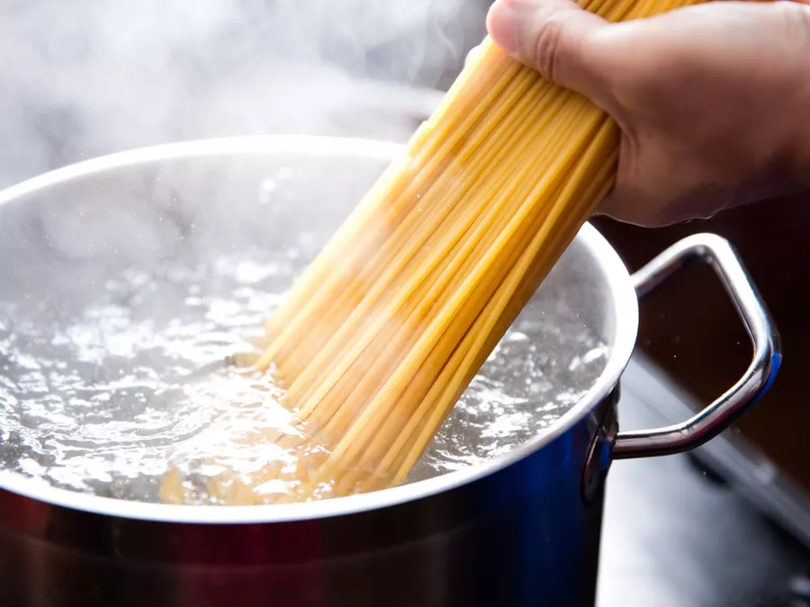

Boiling Spaghetti
yes this is a recipe

Ingredients
- Spaghetti
- Water
- A pinch of Salt
- A drissle of Olive oil
Steps
Fill pot with cold water, but leave some space for the bubbles so that water doesn't boil over the sides.
Add Olive oil and salt.
Bring water to a boil.
Once water is boiling, add in Spaghetti. If you prefer shorter spaghetti, you might want to snap them in half before putting them in the water.
Check Spaghetti packaging for boiling time.
Check if spaghetti is ready by fishing out one noodle and pulling the eccess water off the surface before throwing the noodle at one of your kitchen cabinets, or at your partner. If it stiks and doesn't fall down, the spaghetti is all doneto!
Place lid on pot and carefully pour out the water that's left.
You can add butter,cheese and other condiments of your choice at this point into the pot. Make sure to mix in well before serving.